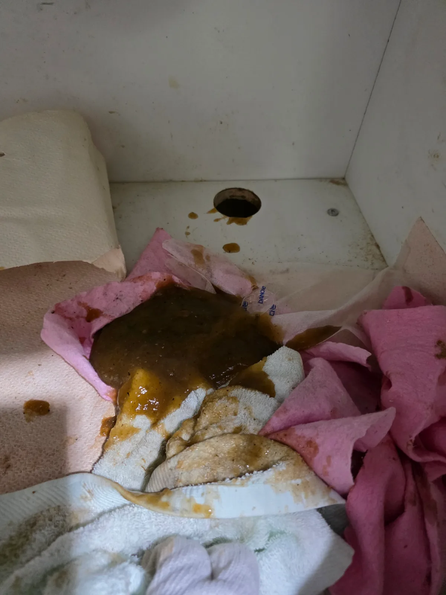
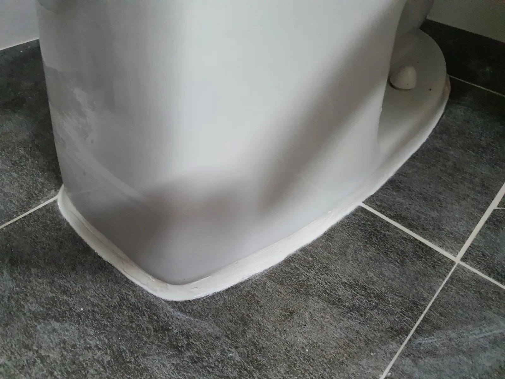
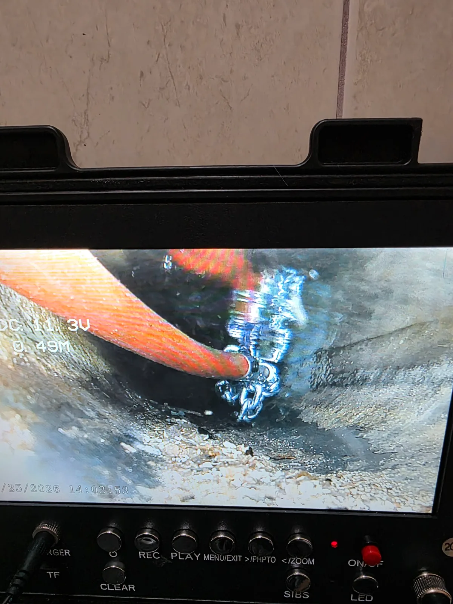

강남구 역삼동 싱크대막힘 | 물 틀자 바닥 배수구로 역류 기름때 석션 샤프트로 해결
강남구 역삼동 싱크대막힘 역삼동에서 싱크대 사용수가 바닥 배수구로 역류해 긴급출동했습니다 배관 입구부터 쌓여 있던 기름때와 이물질을 석션으로
서울특별시 FIELD NOTES
실제 출동 기록이 있는 지역을 중심으로 변기·싱크대·하수구·배관 작업 사례를 연결합니다.

강남구 역삼동 싱크대막힘 역삼동에서 싱크대 사용수가 바닥 배수구로 역류해 긴급출동했습니다 배관 입구부터 쌓여 있던 기름때와 이물질을 석션으로

서초구 반포동 배관공사 30년 넘은 아파트에서 발생한 하수배관 막힘과 트랩 누수 신라건축설비가 원인과 교체 필요성을 고객 눈높이로 설명하고

강남구 개포동 싱크대막힘 신라건축설비가 개포동 싱크대 하부 배관을 내시경으로 점검하고 샤프트로 내부 축적물을 제거한 뒤 고압세척과 내시경

관악구 봉천동 변기막힘 오피스텔에서 관통기와 석션으로 빠지지 않던 플라스틱 용기와 뚜껑 형태의 이물질을 변기 탈거 후 제거했습니다 재설치를

동대문구 장안동 변기막힘 병원 원장님이 직접 의뢰한 변기막힘 현장에서 변기를 탈거하자 하부 오수관에 물이 차 있었습니다 배관 내시경으로 내부

송파구 잠실동 변기막힘 현장에서 관통기와 석션이 듣지 않아 변기를 탈거한 결과 오수관이 가득 차 있었고 204샤프트와 내시경검사 후 정화조

광진구 화양동 변기막힘 변기에 물과 휴지가 내려가지 않아 긴급출동한 뒤 석션 작업으로 내부에 걸려 있던 여성용 위생용품인 탐폰을 꺼내 정상적으로

종로구 동숭동 변기막힘 변기 내부에 들어간 청소솔로 배수가 원활하지 않아 변기를 탈거하고 분해해 청소솔 회수

동작구 상도동 싱크대막힘 내시경 진단 후 샤프트 배관스케일링으로 기름 슬러지와 음식물 찌꺼기 제거 및 통수 확인

성동구 성수동 변기막힘 변기를 탈거해 에어건으로 휴지와 물티슈를 제거하고 재설치 및 통수 확인 후 백시멘트 마감

용산구 이촌동 배관공사 공용배관 고압세척과 굴착 진단 후 파손부를 새 배관으로 연결 보강하고 통수검사 및 몰탈 마감

강남구 신사동 하수구막힘 에어비앤비 입실 전 욕실 배수구 트랩과 배관을 점검하고 석션으로 이물질 제거 후 통수 확인